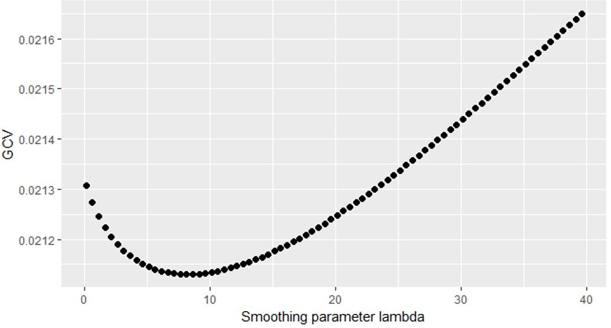
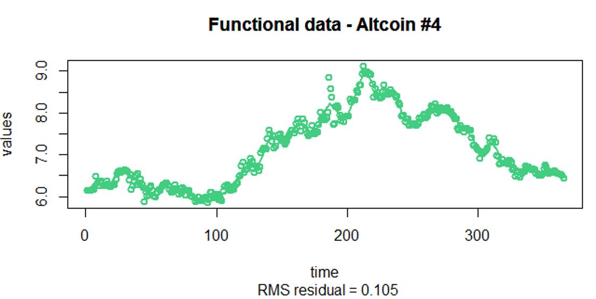
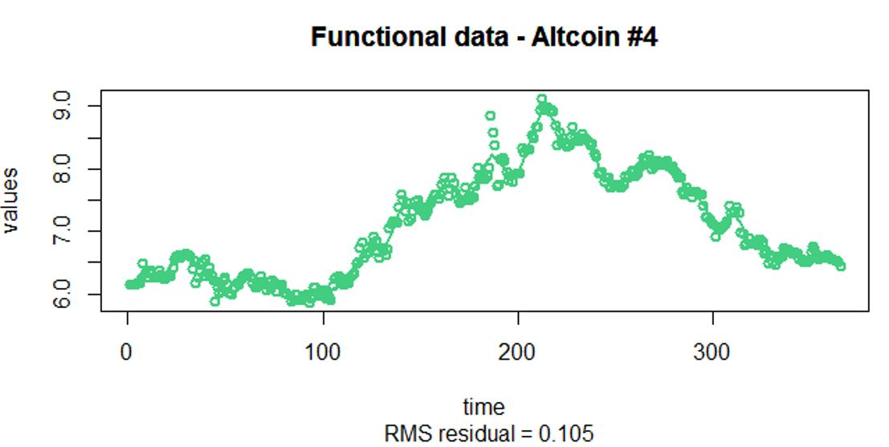

Analyzing Altcoin price using functional principal component analysis
Functional data analysis (FDA) analyses data providing information about curves, surfaces or anything else
varying over a continuum. In functional data's setting, each sample is considered to be a function which
differentiates itself from traditional high-dimensional data anlaysis. In this example, one technique from
FDA - the functional principal component analysis (FPCA) is being used to analyze the closing price of
20 Altcoins over the past year of time. Spline models are used for the pre-smoothing stage of the functional
data in this example.
Functional Data Design
- Dense design with noisy repeated measurements
- The collection of random functions from some stochastic process have the common unknown covariance
function
- Pre-smoothing of individual curves are needed
- Assume error due to smoothing is negligible asymptotically
Why FPCA in functional data?
- Dimension reduction (reducing random curves to a set of functional principal component scores)
- Exploratory data analysis (characterize the dominant modes of variation of the sample around
the mean trends)
- Derive the posterior distribution.
Raw Data
- The raw data is on a dense and equally spaced grid (each sample has 365 observations)
- The raw data is very noisy (as the closing price varies on a daily basis)
- The price is on a log scale so that there is not a very strong difference in amplitude
(need this for the functional PCA stage)
- Need pre-smoothing on the individual curves
Pre-smoothing of the raw data
- Penalized spline models are used for the pre-smoothing of the raw data
- Bsplines are used as the data is aperiodic
- The order of the splines is chosen to be 4 (i.e. cubic splines)
- Both the number of knots and the smoothing parameter are chosen using the GCV approach
- Chose 48 knots (i.e. 50 basis)
- Smoothing parameter is set to be 8.1

 

Interpretations on the FPCA
- The first FPC explains 91.6% of the variation. It contrasts early stage (slightly higher variation)
with later stage (slightly lower variation) (i.e. slightly more weights are placed on the early
prices which lead to higher variability).
- The second FPC explains 4.8% of the variation. It contrasts the early stage and later stage of
the price (which is quite typical for the second FPC).
In plain language
- Results from FPC1 tell us that Altcoins with high positive FPC scores tend to do better in both
the early and later stage (while Altcoins with high negative FPC scores tend to do poorly in both
stages)
- Results from FPC2 tell us that Altcoins with high positive FPC scores tend to do poorly in early
stage but will do better in later stage (while Altcoins with high negative FPC scores tend to do
better in early stage but poorly in later stage)
- Results actually make sense as nowadays there are over 1600 Altcoins in the cryptocurrency market,
and many of the Altcoins have big fluctuation in their prices (often after they get stabilized)
Closing Thoughts

Functional data analysis is a relatively new field in statistics which borrows many of the functional
analysis theories in the statistical analysis. It can be very mathematically involved on the theory side and
its set-up is abstract for beginners (like myself). However, I did find it to be very interesting and
it can be very useful in analyzing many data that cannot be analyzed easily using traditional statistical
methods.
Two concepts that differentiate functional data from high-dimensional data. First is that functional data
assumes infinite dimensionality while high-dimensional data assumes finite dimensionality. Second functional
data assumes data is smooth while in high-dimensional data data can be discrete.
Last updated on Jan 1, 2019